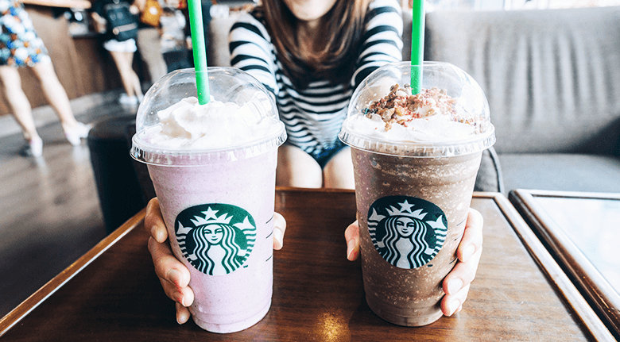

My personal favorite drinks:

The menu can be super over whelming having an idea of a few drinks you might want to try
before you walk in can ease this feeling.
Everyone has different taste, but theres something for everyone. Heres some of my personal favorites
- ~ The Pink Drink, a strawberry coconut cold refresher
- ~ Vanilla Bean frappuccino, a blended vanilla shake, add wipped creme for a milkshake flavor
- ~ Kiwi Starfruit Lemonade, A sour kiwi refresher drink
- ~ Black Tea Lemonade, this is like a classic arnold palmer drink, I add peach juice for a little extra flavor
- ~ Peach Tranquility, this is a hot minty tea perfect for sickness.
- ~ Blonde Roast, a light coffee perfect for coffee lovers who want a simple coffee.